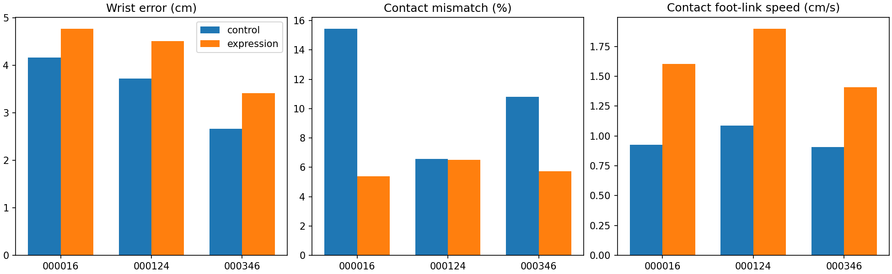
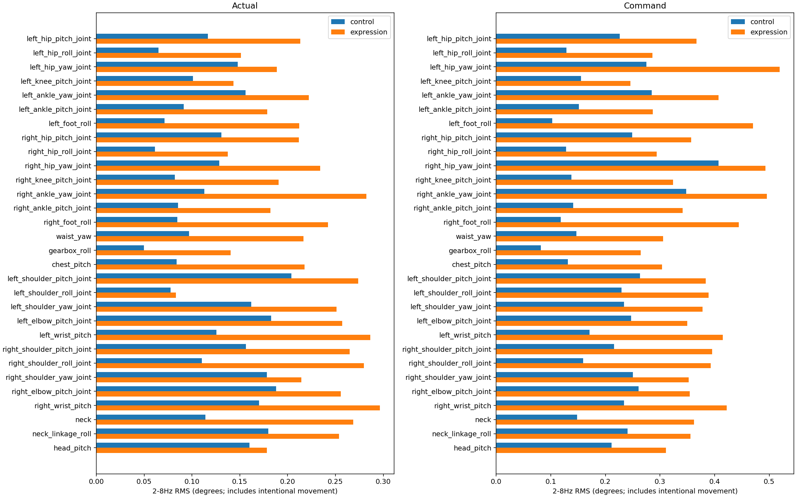

三条验证动作 × 三个评估种子。原始人体视频与机器人片段的时间尺度不同，未做相位同步；不能直接按播放器同一秒比较姿态。
机器人视频：000016/000124为约20秒片段，000346为约35.74秒。定量回放覆盖完整参考长度。5秒窗口不跨重置。此报告是可解释诊断，不是HumanScore。


New policy:7/9 clean vs9/9. Wrist error4.23cm vs3.52cm. Contact mismatch5.88% vs10.94%, but contact foot-link speed1.64cm/s vs0.97cm/s. Expression000346 fails wrist-height tracking in two seeds. Contact improvement alone is insufficient for acceptance. Video replays use separate simulator starts; failure times may differ. Expression000346 full video resets at28.42s after tracking failure.
# TW100 stage-one standing validation
Three validation clips, three evaluation seeds, one training seed. Limited pilot, not independent-test acceptance. 2-8Hz RMS includes intentional motion, not pure jitter. 5s diagnostics, not HumanScore. Foot-link speed/travel is a slip proxy and includes foot rolling. Contact force threshold 1N; unknown labels excluded and coverage reported. Terminal control samples excluded from kinematic diagnostics, but all termination counts retained. No window crosses resets. Upper-body coordinates are chest-centered yaw frames.
Common termination: anchor height/orientation + wrist height. The control policy is evaluated without its training-time foot-reference termination, to use the same criterion as expression.
No observation noise; physical startup randomization varies with evaluation seed42/123/2026. One training seed only.
Original NPY videos are at20fps/source speed. Robot videos are50fps: 000016/000124 approximately20s, 000346 approximately35.74s; retargeted references have longer duration. Videos are NOT phase synchronized. Robot cameras follow horizontal translation smoothly with fixed height; resets may cause cuts.
Five-second windows use simulator time, preserve short tails, and never join reset episodes. Raw force threshold is1N; no time warping changes reference contacts. Unknown coverage is reported.
## control
Clean replays: 9/9
{
"anchor_height_error_m": 0.007408939560668336,
"upper_error_m": 0.02217229600581858,
"wrist_error_m": 0.03516205069091585,
"contact_mismatch_fraction": 0.10941349178248513,
"foot_link_contact_speed_m_s": 0.009737718488193221
}
## expression
Clean replays: 7/9
{
"anchor_height_error_m": 0.024270188063383102,
"upper_error_m": 0.02944252474440469,
"wrist_error_m": 0.04234864024652375,
"contact_mismatch_fraction": 0.058750031643055096,
"foot_link_contact_speed_m_s": 0.016357386174301308
}
## Verdict
New policy NOT accepted as improvement: clean7/9 vs9/9; wrist error4.23cm vs3.52cm.
Contact mismatch improves5.88% vs10.94%, but contact foot-link speed worsens1.64cm/s vs0.97cm/s.
Actual joint2-8Hz RMS0.224deg vs0.130deg; includes intentional motion.
Expression000346 fails wrist-height tracking in seed42 and2026; no anchor fall termination.
Anchor-height error also worsens2.43cm vs0.74cm, so failure is not attributed solely to arms.
Keep baseline. Only three validation clips and one training seed.
Videos use separate simulator starts and can fail at different times from batch metrics.
Expression000346 full video terminates and resets at28.42s; do not confuse reset with successful continuation.
Means cover executed samples; failed policies do not cover the same full reference as successful policies. Completion is reported separately.